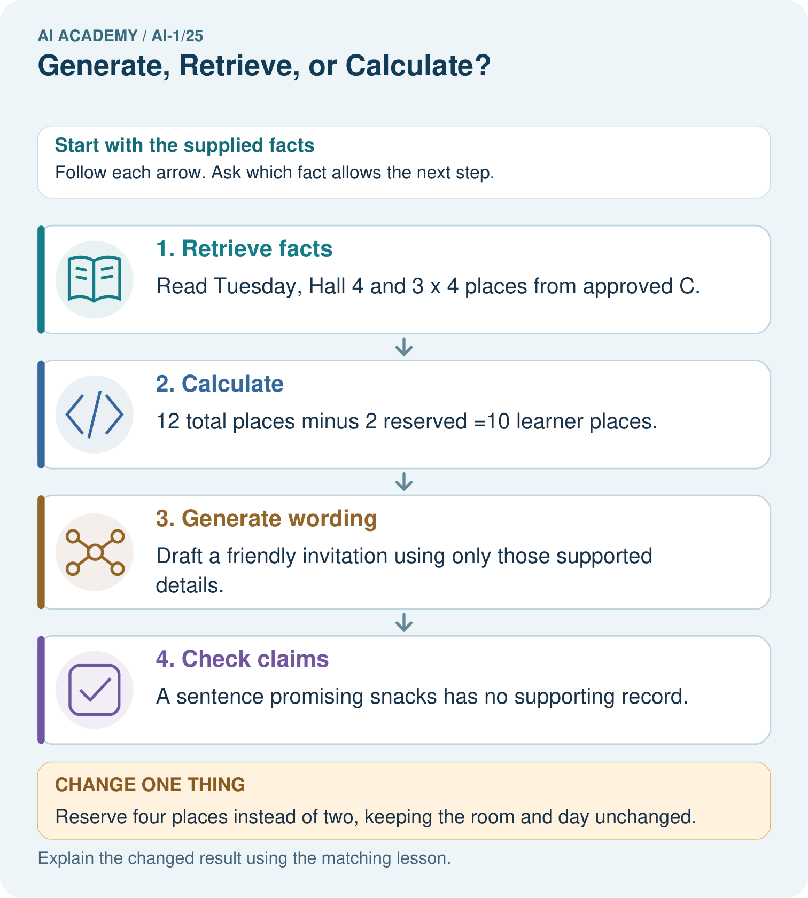

AI Academy · Level 1 · Grade 6 · Week 25 · Teacher guide
Generate, Retrieve, or Calculate?
Learn to understand, design, build, test and explain AI systems responsibly.
Project: Helpful Classroom Sorter
Teacher guide · 1 of 7
Generate, Retrieve, or Calculate?
Teach the learning cycle
Primary target: Distinguish retrieving a record, calculating from inputs and generating wording
| Session | Sequence and minutes | Resources |
|---|---|---|
| Session 1 · Understand · 45 min | 0–7: recall and prerequisite; 7–15: inspect the concrete case and predict; 15–30: teacher models the worked trace; 30–40: learners explain a step using the text and visual; 40–45: check the core idea. | Sections 1–6; record the brief recall in the workbook. |
| Session 2 · Practise · 45 min | 0–5: retrieve the procedure; 5–15: W2 completion practice; 15–23: explain and check with a partner; 23–30: each learner answers the misconception check; 30–40: targeted reteaching or a harder variation; 40–45: prepare the investigation. | Sections 7–10; use the matching workbook W2 and misconception check. |
| Session 3 · Investigate and transfer · 45 min | 0–5: retrieve the decision rule; 5–20: investigate or trace; 20–30: start the independent case; 30–38: connect the project; 38–43: act on feedback; 43–45: plan the return check. | Sections 9 and 11–14. Give extra time to finish the full task set; use Section 15 when the week includes a coding lab. |
This is a starting allocation of 135 minutes, not a validated duration. Preserve all named topics. Schedule extra time for connected examples, the full investigation, independent cases and project building. Repeated copies of a case share one recorded attempt; they are not new evidence.
Retrieval answer guidance
Privacy by Choosing Less
Without opening the old lesson, explain one key idea from Privacy by Choosing Less. Give an example and a mistake that the idea helps you avoid.
Look for: Justify which information a stated task needs and remove unnecessary fields
Reference example, not the only acceptable wording: Keep topic choice; remove name, full date of birth, address and photograph. The totals do not require identity or contact details. Collecting extra fields creates copies and exposure to manage even if those fields are later ignored or deleted.
Missing and Unbalanced Examples
Without opening the old lesson, explain one key idea from Missing and Unbalanced Examples. Give an example and a mistake that the idea helps you avoid.
Look for: Name the target collection, selection list and cases actually assessed
Reference example, not the only acceptable wording: The target is all 24 specified cards across four conditions. The sample is the 6 bright-circle cards. Dim circles, bright squares and dim squares are absent. A frame containing only bright-circle IDs excludes every other condition, regardless of how randomly IDs are drawn from it.
Similarity
Without opening the old lesson, explain one key idea from Similarity. Give an example and a mistake that the idea helps you avoid.
Look for: Calculate similarity using explicitly selected features and a stated scoring rule
Reference example, not the only acceptable wording: A: 1, 1, 0 gives 2. B: 0, 0, 1 gives 1. C: 1, 0, 0 gives 1. A is the only highest scoring candidate among A, B and C under equal weights.
Use the student module and workbook section with this exact week title. The worked case, independent question and answers below form one aligned lesson sequence.
What the learner must demonstrate
Three tasks are: invent a school motto, find the exact fire-drill meeting point in a supplied handbook, and divide 84 stickers among 7 teams. Choose generation, retrieval or calculation for each. Which outputs need checking?
Concept to explain
Different systems create, look up, or compute answers in different ways.
| Term | Meaning |
|---|---|
| generate | create a new output from learned patterns |
| retrieve | find and return stored information |
| calculate | apply defined operations to values |
| provenance | where an output or claim came from |
Prepare the class
Use the supplied scenario, student illustrations and blank paper. For numeric work, offer counters or a calculator after learners show the setup. Fictional records are supplied; personal data and paid accounts are unnecessary.
Allow 80 minutes: recall 8; explanation 12; worked demonstration 15; guided practice 20; independent assessment 15; project and reflection 10. Extend the lab into a second session when needed.
Preparation for the connected explanation
Keep operations distinct without presenting three mutually exclusive product categories. A modern system can retrieve records, call a calculator and generate a final response. Lewis and colleagues provide a primary example combining retrieval and generation: Retrieval-Augmented Generation for Knowledge-Intensive NLP Tasks (2020), https://arxiv.org/abs/2005.11401. Use this as teacher background, not required pupil reading. The fictional notices and arithmetic here are independent classroom examples.
Readiness answer
The task needs the three totals, not pupil identities. Use the least information needed and follow the teacher’s approved tool and data rules.
The fictional N1 and N2 notice details printed in the student lesson
Paper for three-column traces labelled source facts, calculation and wording
The independent library record B in W4; no online account is needed
End goal for the pictorial case
By the end, I can separate retrieval, calculation and generated wording.
This added worked case illustrates the week’s main idea. Retain all original and connected topics; schedule its practice within the teaching cycle.
Teacher guide · 2 of 7
Explain the mechanism
Explain the mechanism
Follow the information instead of imagining magic inside the machine.
INPUT question and available sources or rules
PROCESS generate patterns, retrieve records, or calculate
OUTPUT answer with mechanism-appropriate checking
CORE IDEA Different systems create, look up, or compute answers in different ways.
UNDER THE HOOD Generation synthesizes outputs from learned distributions, retrieval selects stored records, and calculation applies formal operations. Products often combine all three; verification should match the component that produced each claim.
Draw a fresh example with all three stages:
Every step connects a claim to observable evidence.
CASE A story generator creates new wording, a library search retrieves a stored title, and a calculator computes a result from stated operations.
STEP 1 — OBSERVE question and available sources or rules
STEP 2 — TRACE generate patterns, retrieve records, or calculate
STEP 3 — CONCLUDE answer with mechanism-appropriate checking
MODEL REASONING Check generated claims against independent evidence, check retrieved facts against the cited record and freshness, and recompute calculations or inspect the operation. Mixed outputs need more than one check.
DO NOT OVERCLAIM Fluent wording does not reveal whether a fact was retrieved, generated, or calculated.
What new evidence could change this answer?
Concrete teaching case
A learner needs a new poem, 18+7, and a passage from the class handbook.
Choose the operation for each.
Exact explanation to model
Generate the poem, calculate 25, retrieve the actual passage. Inventing a fluent passage is not retrieval.
Explain the added worked example
Three tasks can produce similar-looking text while doing different work. Retrieval finds existing information. Calculation applies mathematical operations to input values. Generation produces content using a model and the context it receives. A single application can combine all three, so the label AI does not tell you which step happened.
Our fictional makers club has a current notice N2: Wednesday, Room 4, six tables with four places at each table, and three places reserved for helpers. An older notice N1 says Room 2. N2 explicitly replaces N1 for this event. These records are invented for this lesson; no search, account or real booking is needed.
To answer “Which room does the current notice list?”, find N2 and return Room 4 with the record identifier. That is retrieval. To answer “How many places remain after the helper reservation?”, use 6 × 4 − 3 = 21. That is calculation. To suggest a friendly invitation, generate wording and check that its factual details agree with N2.
Retrieving N1 accurately would still give an outdated room for this task. Successful retrieval means finding a record, not proving that every record is correct or current. Check the event, source and version. Here the explicit replacement statement tells us which notice governs the classroom example.
A calculator given 6 × 4 correctly returns 24, but 24 is the total capacity, not the number remaining after three reserved places. Correct arithmetic on an incomplete expression answers the wrong question. Explain the input values, units and operations before accepting a number.
Key terms
| Term | Meaning |
|---|---|
| Retrieval | Finding and returning existing information from a collection |
| Calculation | Applying specified mathematical operations to input values |
| Generation | Producing content using a model and its input context |
| Source record | An existing item whose content and origin can be inspected |
| Trace | A record of the inputs, operations and outputs used in a task |
Model the reasoning aloud
Use the complete worked example below before asking learners to complete W2. Reveal a small part, invite a prediction, then explain the deciding step. These teacher notes contain solutions; do not reveal the independent case answer during modelling.
| Meet Wednesday in Room 4 | Current notice N2 | Supported by the record |
|---|---|---|
| There are 21 non-helper places | 6 × 4 − 3 from N2 | Supported by calculation |
| Free snacks will be provided | Not stated in N2 | Remove or verify separately |
A generated invitation might add free snacks because that detail fits a familiar invitation pattern. Plausible wording is not evidence that snacks are provided. Remove that claim or obtain an appropriate confirming source before including it. Generated content can be useful and can contain correct facts; its fluent style alone does not verify those facts.
Generation also does not guarantee originality. A response may repeat wording already present in its context or elsewhere. Retrieval and calculation can feed a generator, and a generator can propose a calculation for another tool. Keep the evidence path visible instead of assuming that every sentence came from the same operation.
| Thinking move | Teacher prompt |
|---|---|
| Plan | What is given? What is the question? Which procedure fits these facts? |
| Do | Point to each input and intermediate step in the worked trace. Name the rule that allows the next step. |
| Check | Does the output answer the question? Which assumption or limitation prevents a larger claim? |
Use the diagram and verbal explanation together. Ask learners to match a sentence to a specific visual step; do not assign learners fixed visual or auditory learning styles.
A pictorial worked case: Generate, Retrieve, or Calculate?
A fictional craft invitation combines three different operations.
The facts we will use
Approved record C: Tuesday, Hall 4, three tables with four learner places each.
Two places are reserved for helpers; no snack information is supplied.

Read the picture one step at a time
Why this result follows
Retrieval copies relevant source information; calculation follows arithmetic; generation proposes wording. These jobs can cooperate, but one does not validate the others. A friendly generated sentence can still contain an invented detail. Keep the approved source beside the draft and check each factual claim separately.
What this example does not establish
The fictional source must itself be current and authoritative; retrieval alone does not ensure a record is correct.
Change one thing in the pictured case
Change: Reserve four places instead of two, keeping the room and day unchanged.
Prediction: Eight learner places remain.
Reason: 3×4−4=8; this changes capacity for learners, not the retrieved date or location.
Ask while showing the picture
Cover the result. Ask learners to name the inputs and predict the next step. Uncover one step, connect the icon to the actual procedure, and explain its evidence. Then change the supplied condition and compare. The picture is a representation; it does not document execution of a real AI model.
Teacher guide · 3 of 7
Demonstrate and guide practice
Demonstrate and guide practice
Board sequence
Write the given facts: A learner needs a new poem, 18+7, and a passage from the class handbook.
Write the question to explain: Choose the operation for each.
Reveal after predictions: Generate the poem, calculate 25, retrieve the actual passage. Inventing a fluent passage is not retrieval.
Keep for an independent attempt: Choose a method for each task: invent a dragon story; find the library's posted hours; compute 7 plus 5. Explain why the methods differ.
Classroom dialogue
Ask: Which facts are given, and which would we have to assume? Learners mark relevant details before discussing answers.
Say: Predict first. Show the rule, information path or calculation that would produce the result. A correct guess is not yet an explanation.
Reveal reasoning one step at a time. Explain why a tempting alternative fails. Write units and denominators for arithmetic, trace conditions for decisions, and identify supporting sources for claims.
In pairs, one learner solves while the other checks evidence; exchange roles. Remove the worked answer before independent assessment.
Model these guided questions
Correct Thursday to Wednesday using N2; Room 4 is supported. Remove free snacks unless independently verified. Replace 24 remaining with 21 from 6 × 4 − 3. One sentence: The makers club meets Wednesday in Room 4, with 21 places after the helper reservation. Exit: 6 × 4 − 5 = 19; day, room, table count and places per table stay the same. The changed reservation invalidates the old remaining count.
Case-specific teaching sequence
| Stage | Teacher action |
|---|---|
| Session 1 start 0 to 7 minutes | Retrieve the minimal-input principle from Week 24. |
| 7 to 20 minutes | Compare the three operations using N2 and complete W1. |
| 20 to 33 minutes | Trace the diagram and complete W2. Ask what the result’s unit and meaning are. |
| 33 to 45 minutes | Complete W3 and separate a retrieved record from a current record. |
| Session 2 start 0 to 8 minutes | Retrieve why correct arithmetic can still answer the wrong question. |
| 8 to 23 minutes | Complete the guided correction. Require evidence for each factual claim. |
| 23 to 38 minutes | Collect W4 independently, with source, expression, result and unsupported detail. |
| 38 to 45 minutes | Complete W5 and the exit. Discuss identical outputs with different or unknown methods. |
Reduce help deliberately
Completion task: A calculator correctly returns 24 for 6 × 4. A pupil reports this as the number of non-helper places available. Explain the problem and write the correct expression, result and meaning.
Teacher check: 24 is total capacity before the three helper places are reserved. The requested remaining count is 6 × 4 − 3 = 21 non-helper places. The calculator can execute the supplied expression correctly while that expression omits a required step.
Start by identifying the given inputs together. Leave the intermediate steps blank. If needed, model one step, then withdraw that help on the next step. Move to a full trace only when the partial trace is understood. For partners, alternate explainer and checker; collect a response from every learner before discussion.
Individual reasoning check
Use the worked case for Generation retrieval and calculation. Proposed explanation: “Retrieving a record proves it is current”. Decide whether this explanation is supported. Point to the step or supplied fact that decides; explain your repair if needed.
Expected correction: Check event and version; N1 is superseded by N2 in this example.
Collect explanations, not only yes/no votes. If a misunderstanding is common, re-model the relevant step for the class. If it affects a few learners, give a short targeted group explanation while others solve a more demanding variation.
Pictorial practice question
Label each arrow with its operation. Can the system add snacks because invitations often mention them?
Reasoned teacher answer
The arrows are retrieval, calculation and generation. No: snacks need confirmation; familiar wording is not evidence.
Changed-case reasoning: Eight learner places remain. 3×4−4=8; this changes capacity for learners, not the retrieved date or location.
Collect each learner’s explanation before discussion. Use the first missing connection between input, deciding step and result to choose support. This question is worked-case practice, not fresh mastery evidence.
Teacher guide · 4 of 7
Run the weekly evidence lab
Run the weekly evidence lab
Predict first, test honestly, and explain what the evidence means.
State your prediction before the result is known.
Complete the task: Classify nine outputs by mechanism and verification need.
Keep a normal case and an edge case clearly separated.
Record what happened—even when it does not match your prediction.
Explain the result, one limitation, and the next useful test.
INDEPENDENCE After support is removed, repeat the proof with a fresh case.
Make the lab runnable
Use the concrete case as the shared normal case and the independent question as a second case. Each pair creates a boundary or missing-information case and predicts its result before testing. Keep the expected result separate from an observed mistake.
| Record | What to capture |
|---|---|
| Input or evidence | Exact data, instruction or claim |
| Expected result | Answer or safe fallback declared before the run |
| Observed result | Actual result, including errors |
| Explanation | Rule, calculation or evidence explaining the outcome |
| Next test | One justified change and a new prediction |
Diagnose and reteach
CLAIM TO REPAIR Generating plausible text is the same as retrieving a fact.
For guessing, return to given facts and request a trace. For vocabulary without application, use one example and one non-example. For arithmetic errors, check the setup before the calculation. Finish with a different uncoached case before recording mastery.
Address these additional misconceptions
Retrieving a record proves it is current: Check event and version; N1 is superseded by N2 in this example.
A correct calculator result always answers the task: The expression must include the required reservation and correct units.
Fluent generated details are verified facts: Free snacks and transport need evidence; wording alone is insufficient.
The final sentence reveals the method: Matching outputs do not establish matching operations; inspect records and traces.
Match the support to the first error
| What the response shows | Next teaching action |
|---|---|
| Missing or misread facts | Read the case aloud, mark supplied versus unknown facts, and let the learner restate it. |
| Wrong procedure | Return to the deciding step in the worked case. Contrast it with the proposed incorrect explanation. |
| Arithmetic or implementation error | Trace intermediate values or lines; preserve the first mismatch and retry that step. |
| Correct result without a reason | Ask for a trace and a changed case before marking independent understanding. |
| An unsupported wider claim | Ask which supplied evidence supports the claim and which further observation would be needed. |
Offer an oral explanation, drawing, enlarged visual or fewer examples when that removes a reading/writing barrier. Keep the same reasoning goal. Stretch secure learners by changing a boundary or assumption and asking them to defend the effect, not simply by assigning more of the same questions.
Teacher guide · 5 of 7
Assess and explain the answers
Assess and explain the answers
Worked case answer
Generate the poem, calculate 25, retrieve the actual passage. Inventing a fluent passage is not retrieval.
Independent question
Choose a method for each task: invent a dragon story; find the library's posted hours; compute 7 plus 5. Explain why the methods differ.
Expected independent answer
Generate the story, retrieve the posted hours, and calculate 12. Creativity, source lookup and arithmetic require different evidence and checking.
What counts as evidence
| Criterion | 0 points | 1 point | 2 points |
|---|---|---|---|
| Result | Incorrect or absent | Partly correct | Correct with necessary conditions |
| Reasoning | No supporting trace | Some steps | Clear mechanism, calculation or source support |
| Limit | Overclaims certainty | Vague limitation | Relevant uncertainty or missing fact |
| Transfer | Copies without adapting | Adapts with prompts | Solves a changed case independently |
Use 6/8 as a classroom checkpoint, with 2 required for both Result and Reasoning. This is a proposed teaching rule, not a validated certification threshold. Do not count a coached answer as independent mastery; correct unsafe or unsupported claims regardless of total.
Feedback
Ask the learner to find the evidence that challenges this claim: “Generating plausible text is the same as retrieving a fact.” Keep the first attempt and an uncoached retry separate.
Original transfer answer
Generate a motto and inspect suitability; retrieve and cite the actual handbook passage for the meeting point; calculate 84/7=12 stickers each and check 12×7=84. All need task-appropriate checks. A fluent invented location cannot substitute for the handbook.
Explanations for the additional workbook examples
W1 Name the operation and its evidence
For each task name the main operation and a suitable check: find the room listed in N2; work out six tables of four places minus three reserved places; suggest an inviting title for the event. Can an application combine these operations?
Room: retrieval, checked against the right source N2 and event. Remaining places: calculation, checked as 6 × 4 − 3 = 21 with correct inputs. Title: generation, checked for the requested style and unsupported factual details. An application can combine them; the labels describe operations rather than exclusive types of application.
W2 Separate a correct sum from a correct answer
A calculator correctly returns 24 for 6 × 4. A pupil reports this as the number of non-helper places available. Explain the problem and write the correct expression, result and meaning.
24 is total capacity before the three helper places are reserved. The requested remaining count is 6 × 4 − 3 = 21 non-helper places. The calculator can execute the supplied expression correctly while that expression omits a required step.
W3 Inspect a record and a draft
N1 lists Room 2. N2 explicitly replaces N1 for this event and lists Wednesday in Room 4. A draft says Thursday in Room 2 with free snacks. Identify the supported corrections and the unsupported detail. Explain why finding N1 successfully would not settle the current-room question.
Use Wednesday and Room 4 from N2. Free snacks are unsupported and should be removed or verified with a suitable source. N1 is an existing record but is superseded for this event, so retrieving it does not establish the current room.
W4 Trace a new library workshop
Current fictional record B lists a library workshop on Friday in Room 5: five tables with six places each, with four places reserved for helpers. B replaces old record A, which lists Room 3. A draft says “Thursday in Room 3, with 30 places remaining and a free bus home.” Retrieve the current day and room, calculate the non-helper places, write a corrected factual sentence and identify the detail that cannot be supported by B.
Retrieve Friday and Room 5 from B. Calculate 5 × 6 − 4 = 26 non-helper places. A suitable sentence is: The workshop is Friday in Room 5 with 26 places after the helper reservation, according to B and the capacity calculation. The free bus is unsupported and must be removed or verified separately. The draft’s 30 is total capacity before reservation.
W5 Do not infer a method from its output
Two applications both display “26 places remain.” Only one provides record B and a trace showing 5 × 6 − 4. What can and cannot be concluded from their matching sentences? Describe how you would check the numerical claim without relying on either application’s assurance.
The visible numerical outputs match, but that alone does not reveal the second application’s method or prove that either checked the right task. Inspect current B, confirm the inputs and independently calculate 5 × 6 − 4 = 26. The first trace supports inspection; a verbal assurance of checking is not equivalent to inspectable evidence.
Assess independent transfer
Selected case: Current fictional record B lists a library workshop on Friday in Room 5: five tables with six places each, with four places reserved for helpers. B replaces old record A, which lists Room 3. A draft says “Thursday in Room 3, with 30 places remaining and a free bus home.” Retrieve the current day and room, calculate the non-helper places, write a corrected factual sentence and identify the detail that cannot be supported by B.
Selected case answer
Retrieve Friday and Room 5 from B. Calculate 5 × 6 − 4 = 26 non-helper places. A suitable sentence is: The workshop is Friday in Room 5 with 26 places after the helper reservation, according to B and the capacity calculation. The free bus is unsupported and must be removed or verified separately. The draft’s 30 is total capacity before reservation.
| Dimension | Evidence required |
|---|---|
| Explanation | Names the applicable idea or procedure and ties it to the supplied facts. |
| Trace and result | Preserves the given inputs and shows the relevant intermediate steps; distinguishes a prediction from an observed execution. |
| Limits | States the assumptions, missing evidence or conditions under which the result would change. |
Record each dimension as not yet, with support, or independent. Accept a valid alternative procedure with a defensible trace. Do not penalise an honestly recorded model failure if the learner correctly explains its evidence and limits.
Feedback that the learner uses
Name the earliest unsupported step and give one action to repair it. Have the learner make that repair now and explain why. Then assess the relevant skill on a fresh, fully specified case. Confirm it was not previously practised with feedback; solve and check the new case before assigning it. A follow-up design prompt is a starting brief, not automatically an equivalent test.
Teacher guide · 6 of 7
Connect and extend learning
Connect and extend learning
Helpful Classroom Sorter
Label every sorter component as generate, retrieve, calculate, fixed rule, learned prediction, or human decision.
Keep the decision, input, result, explanation and remaining limitation in the project evidence record. Retrieve this record next week rather than restarting the project.
Support and stretch
Use physical cards, spoken explanations and a three-stage drawing. Read aloud without giving the answer. Stretch: compare two mechanisms with the same visible output and explain what evidence distinguishes them.
Exit reflection
Ask for one decision the learner can now justify and one situation requiring more evidence or human review. Confidence ratings are separate from correct independent performance.
Bridge to the next week
Next: Week 26: Prompts Are Design Instructions. Retrieve today’s evidence and identify what carries forward and what is new.
Support and fresh reassessment
Use three coloured cards for recorded fact, derived quantity and suggested wording. Work with counters for total and reserved places. Extension: explain which steps should be repeated if only the room changes versus if the number of tables changes.
W4 requires Friday, Room 5, record B, 5 × 6 − 4 = 26, a consistent corrected sentence and rejection of the unsupported free bus. After support change B to reserve seven helper places: require 23 remaining with the same day and room, and continued rejection of the transport claim. A numerical result without its source and expression is incomplete evidence.
Week 26 turns a vague request into a clear prompt with supplied evidence, output requirements and tests.
Plan the delayed return
Suggested return points in this level: ai-1/26, ai-1/28, ai-1/31. Use actual classroom dates, adjusting for holidays and gaps. One, three and six teaching weeks are scheduling choices, not a claimed optimal spacing.
At a delayed check, ask for the idea from memory and a changed application. Compare with the earlier independent response and record support used. For a new level, revisit the previous capstone before checking the new prerequisites.
| Record | Teacher evidence |
|---|---|
| Learner code and date | |
| Concept and case used; prior exposure | |
| Explanation / trace / limits | |
| Support and first repair | |
| Changed case and delayed outcome | |
| Next teaching action |
Use the evidence to choose reteaching or the next step. A completed page, confidence rating or attractive project does not by itself demonstrate understanding.
Project evidence from this case
Use the sorter’s approved catalogue for facts, explicit calculations for scores and checked prose for explanations.
Teacher guide · 7 of 7
Prepare, teach and assess
Teaching target: Distinguish retrieving a record, calculating from inputs and generating wording
Prepare the labelled worked-case picture, the matching workbook, fictional input cards and a place for individual responses. No paid AI account is required for the paper reasoning activities.
| Session | Plan | Resources |
|---|---|---|
| Session 1 · Understand · 45 min | 0–7: recall and prerequisite; 7–15: inspect the concrete case and predict; 15–30: teacher models the worked trace; 30–40: learners explain a step using the text and visual; 40–45: check the core idea. | Sections 1–6; record the brief recall in the workbook. |
| Session 2 · Practise · 45 min | 0–5: retrieve the procedure; 5–15: W2 completion practice; 15–23: explain and check with a partner; 23–30: each learner answers the misconception check; 30–40: targeted reteaching or a harder variation; 40–45: prepare the investigation. | Sections 7–10; use the matching workbook W2 and misconception check. |
| Session 3 · Investigate and transfer · 45 min | 0–5: retrieve the decision rule; 5–20: investigate or trace; 20–30: start the independent case; 30–38: connect the project; 38–43: act on feedback; 43–45: plan the return check. | Sections 9 and 11–14. Give extra time to finish the full task set; use Section 15 when the week includes a coding lab. |
Before class, solve the supported practice: A calculator correctly returns 24 for 6 × 4. A pupil reports this as the number of non-helper places available. Explain the problem and write the correct expression, result and meaning.
Reasoned practice answer: 24 is total capacity before the three helper places are reserved. The requested remaining count is 6 × 4 − 3 = 21 non-helper places. The calculator can execute the supplied expression correctly while that expression omits a required step.
Check every learner before discussion: Use the worked case for Generation retrieval and calculation. Proposed explanation: “Retrieving a record proves it is current”. Decide whether this explanation is supported. Point to the step or supplied fact that decides; explain your repair if needed.
Misconception repair: Check event and version; N1 is superseded by N2 in this example.
Support: read the exact case aloud, enlarge the labelled picture, supply input cards and model only the first deciding step. Accept a spoken explanation or drawing; retain the reasoning goal.
Extension: Reserve four places instead of two, keeping the room and day unchanged. Require a prediction and a reason before comparing. Expected result: Eight learner places remain. Reason: 3×4−4=8; this changes capacity for learners, not the retrieved date or location.
Independent assessment: withhold the reserved answer until the learner has attempted the new case. Record support separately from correctness.
| Criterion | Not yet | With support | Independent |
|---|---|---|---|
| Explanation | Names an answer without a deciding fact | Uses a hint to link fact and decision | Explains the deciding fact in own words |
| Trace or test | Cannot connect input and result | Completes steps with prompts | Traces or tests a changed case accurately |
| Limits and revision | Claims more than evidence supports | Names a limit after a prompt | States a defensible limit and useful next test |
Project checkpoint: Prepare the demonstration. Gather reproducible instructions, evidence, access checks and remaining limitations.
Use the weekly teacher answer for topic-specific reasoning. A saved progress tick is an activity record; judge mastery from the learner’s explanation and evidence.